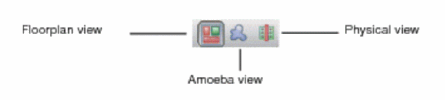

Design Views
The Tempus main window includes three different design views that you can toggle during a session:
- Floorplan View
- Amoeba View
-
Physical View

Selecting a design view also changes the display of the available tool widgets.
Floorplan View
The Floorplan view displays the hierarchical module and block guides, connection flight lines, and floorplan objects, including block placement, and power and ground nets.
Use the Shift+G keys or click the Ungroup widget to display the submodules for a selected module guide. Each time you use the Shift+G keys, you move further down the hierarchy. Use the G key or click the Group widget to move up the hierarchy.
Amoeba View
The Amoeba view displays the outline of the modules and submodules after placement, showing physical locality of the module.
Use the Shift + G keys or click the Ungroup widget to display the submodules for a selected module guide. Each time you use the Shift+G keys, you move further down the hierarchy. Use the G key or click the Group widget to move up the hierarchy.
Physical View
The Physical view displays the detailed placements of the module's blocks, standard cells, nets, and interconnects. You can move standard cells, blocks, and power and ground objects in the Physical and Floorplan views.
Viewing Floorplan Objects in Physical View
You can view the floorplan objects even in the physical view. To enable this feature:
- Select View - Set Preference.
- Select the Display page in the Preferences form.
- Select the option, Show Floorplan Objects in Physical View.
You can use this feature together with color groups to create a custom view. For example, you can create a color group that has a custom setting for block colors and use this color group while viewing floorplan objects in the physical view.
Return to top